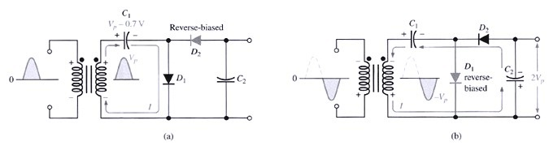
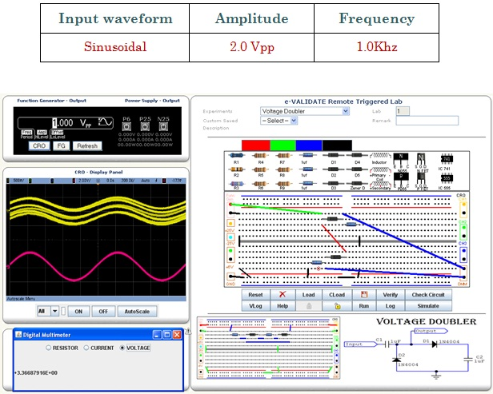

|  |
A voltage doubler is a voltage multiplier with a multiplication factor of two. During the positive half-cycle of the secondary voltage, diode D1 is forward-biased and D2 is reverse-biased. Capacitor C1 is charged to peak of the secondary voltage (VP) less the diode drop with the polarity shown in part (a). During the negative half-cycle, diode D2 is forward biased and D1 is reverse-biased. Since c1 can’t discharge, the peak voltage on c1 adds to the secondary voltage to charge C2 to approximately 2VP. Applying Kirchhoff’s law:
|  |